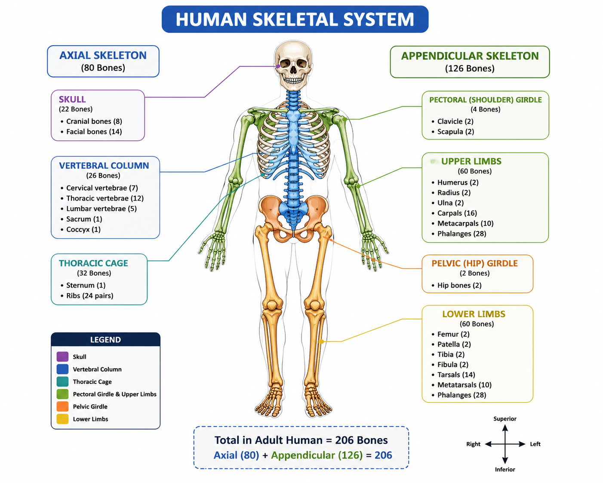
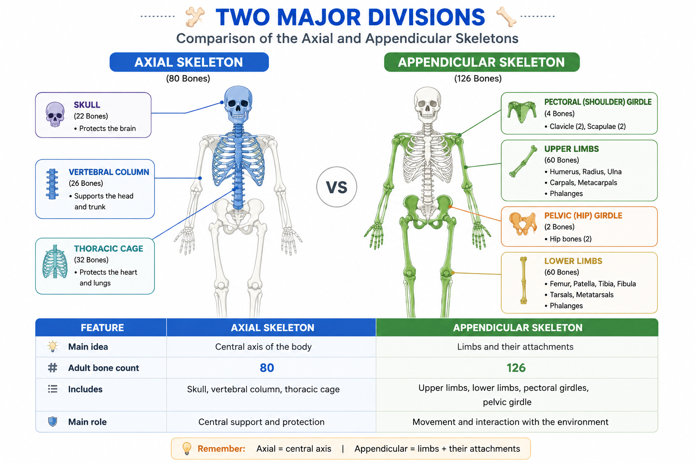

The skeletal system forms the body's internal framework, providing support and protection while working with muscles and joints to produce movement.
🦴 What is the Skeletal System?
The skeletal system is the body's internal framework, made up mainly of bones and cartilage, together with structures such as ligaments that connect and support parts of the skeleton.
It gives the body its shape and support, protects important organs, and works with muscles and joints to make movement possible.
An adult human skeleton typically contains 206 bones. The number is higher in children because some bones fuse together as the body develops.
The skeletal system is the body's supporting framework. It gives us shape, protects vital organs, stores important minerals, helps us move, and contains bone marrow where blood cells are produced.
⚙️ What Does the Skeletal System Do?
The skeletal system performs several important functions throughout the body.
Support
Bones form a strong internal framework that supports the body and helps maintain its shape.
Protection
Bones protect delicate organs from injury.
Movement
Bones provide attachment points for muscles and work with joints to produce movement.
Blood Cell Production
Blood-forming tissue in bone marrow produces blood cells.
Mineral Storage
Bones store important minerals, especially calcium and phosphate.
Fat Storage
Certain bone marrow spaces contain fat, which serves as an energy reserve.
| Function | Main Role |
|---|---|
| 🧱 Support | Gives the body structure |
| 🛡️ Protection | Shields vital organs |
| 🏃 Movement | Works with muscles and joints |
| 🩸 Blood cell production | Bone marrow produces blood cells |
| 🧂 Mineral storage | Stores calcium and phosphate |
| 🟡 Fat storage | Stores energy in bone marrow |
🧍 Skeletal System Overview
The human skeleton is organized into two major divisions: the axial skeleton and the appendicular skeleton.

Major regions of the human skeleton.
Axial Skeleton
The central axis of the body.
- Skull
- Vertebral column
- Thoracic cage
Appendicular Skeleton
The limbs and the structures that attach them to the axial skeleton.
- Pectoral girdles
- Upper limbs
- Pelvic girdle
- Lower limbs
⚖️ Axial vs Appendicular Skeleton
The adult skeleton contains 206 bones: 80 in the axial skeleton and 126 in the appendicular skeleton.

Axial and appendicular divisions of the adult skeleton.
| Feature | Axial Skeleton | Appendicular Skeleton |
|---|---|---|
| Main idea | Central axis | Limbs and their attachments |
| Adult bone count | 80 | 126 |
| Includes | Skull, vertebral column, thoracic cage | Upper limbs, lower limbs, pectoral girdles, pelvic girdle |
| Main role | Central support and protection | Movement and interaction with the environment |
📚 Explore the Skeletal System
Continue through the sub-lessons to explore the skeletal system in greater detail.